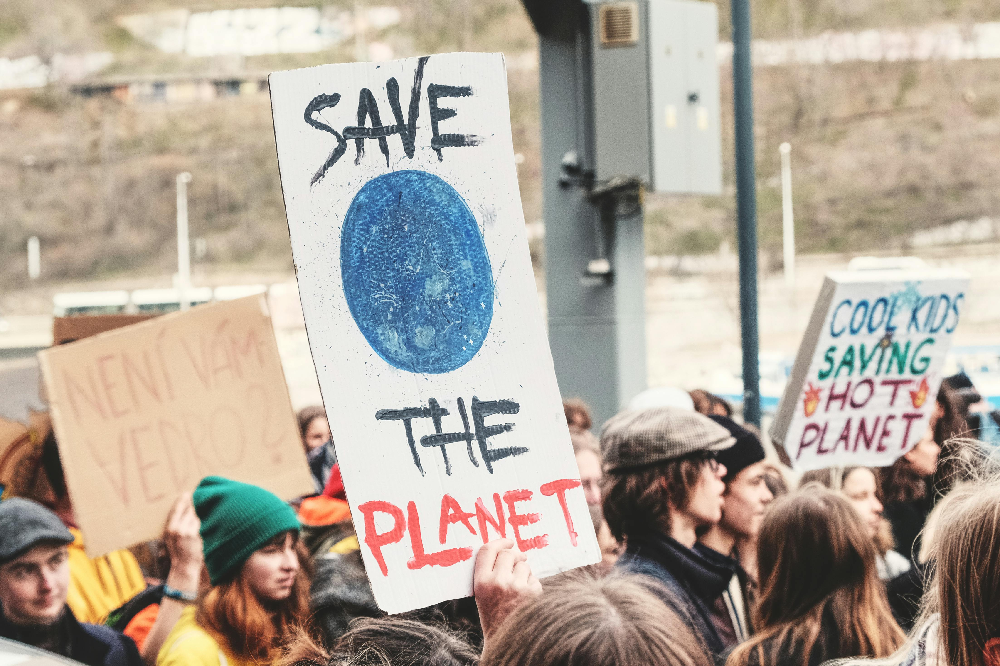
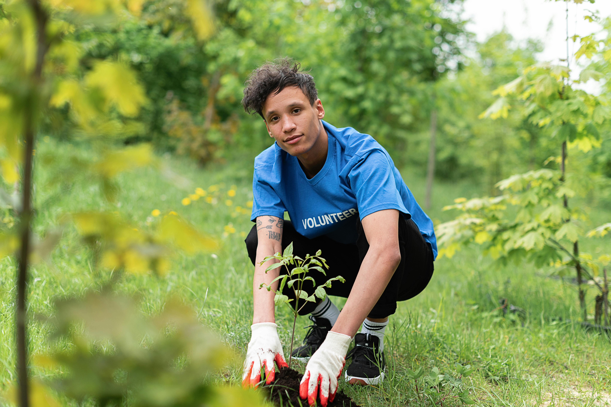
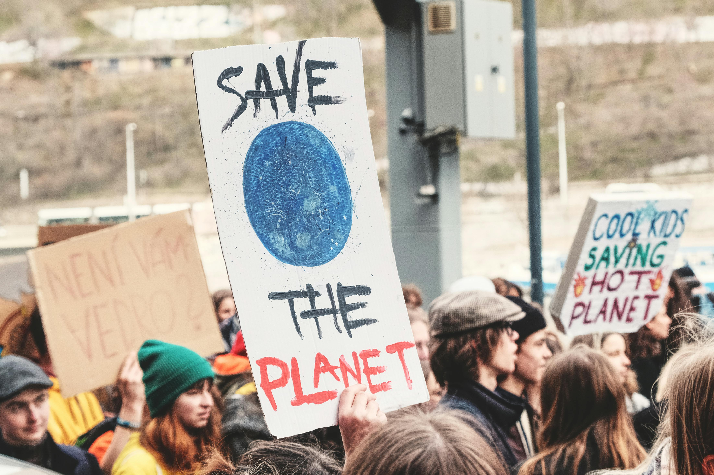
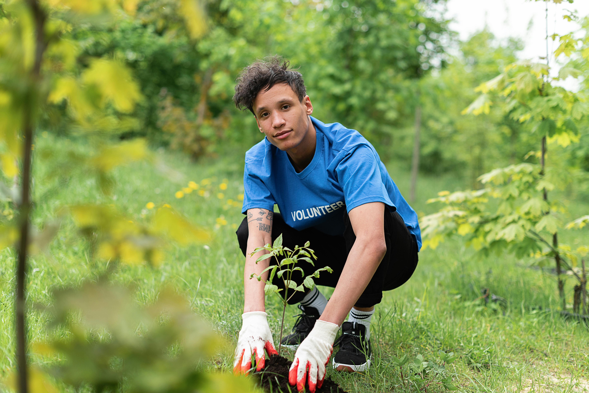

Caminhos para o Futuro: Soluções para o Apocalipse Climático
Diante dos desafios impostos pelas mudanças climáticas, é fundamental reconhecer que existem soluções concretas e caminhos viáveis para construir um futuro mais sustentável e resiliente. Esta página explora as principais frentes de ação que, juntas, podem reverter o cenário atual e nos guiar rumo a um planeta mais equilibrado.
 



-
Energia Limpa e Transição Energética
A transição energética é a espinha dorsal de qualquer solução climática, focando na substituição progressiva dos combustíveis fósseis por fontes de energia renováveis. Isso inclui o vasto potencial da energia solar, aproveitando a luz do sol através de painéis em telhados ou em grandes usinas; a força da energia eólica, capturada por turbinas tanto em terra quanto no mar; e o uso de outras fontes como a energia hidrelétrica, biomassa e geotérmica. Crucial para essa transição é o desenvolvimento de tecnologias de armazenamento de energia, como baterias avançadas, que garantem o fornecimento contínuo. Governos e empresas desempenham um papel vital ao criar políticas de incentivo que aceleram a adoção dessas tecnologias em larga escala, tornando a energia limpa acessível e abundante.
-
Agricultura e Uso da Terra Sustentáveis
A forma como produzimos nossos alimentos e manejamos a terra tem um impacto significativo no clima. A agricultura e o uso da terra sustentáveis buscam reduzir esse impacto negativo e, ao mesmo tempo, restaurar ecossistemas vitais. Práticas como a agricultura regenerativa focam em melhorar a saúde do solo, aumentando sua capacidade de sequestrar carbono e reter água. A agrofloresta, que integra árvores e culturas, promove a biodiversidade e a resiliência. A redução do desmatamento, especialmente em biomas cruciais como a Amazônia e o Cerrado no Brasil, e o reflorestamento são essenciais para proteger a biodiversidade e os sumidouros de carbono. Além disso, a adoção de dietas mais sustentáveis, com menor consumo de carne e a minimização do desperdício de alimentos, contribui enormemente para a redução das emissões.
-
Economia Circular e Consumo Consciente
Mudar o paradigma de "extrair, produzir, descartar" para um modelo mais regenerativo é a essência da economia circular. Este conceito se baseia nos princípios de reduzir, reutilizar, reciclar e reparar, minimizando a necessidade de novos recursos e a geração de lixo. A redução do desperdício precisa acontecer em todos os setores, desde a indústria até o dia a dia doméstico. Isso envolve o desenho de produtos sustentáveis, feitos para durar, serem facilmente consertados ou reaproveitados. Por fim, o consumo consciente empodera indivíduos e coletividades, mostrando que as escolhas de compra podem impulsionar mercados mais responsáveis e menos impactantes.
-
Inovação e Tecnologias de Sequestro de Carbono
A ciência e a tecnologia oferecem novas ferramentas para combater as emissões e até mesmo remover o carbono já existente na atmosfera. As tecnologias de sequestro de carbono incluem inovações como a Captura Direta de Ar (DAC), que utiliza máquinas para "sugar" o dióxido de carbono diretamente da atmosfera, e a Bioenergia com Captura e Armazenamento de Carbono (BECCS), que combina a geração de energia a partir de biomassa com a captura do CO2 liberado. Além disso, as soluções baseadas na natureza são cruciais: restaurar pântanos, mangues e florestas amplifica a capacidade natural do planeta de absorver carbono, utilizando a própria biodiversidade a nosso favor.
-
Adaptação e Resiliência
Mesmo com todos os esforços para reduzir as emissões, alguns impactos das mudanças climáticas já são inevitáveis. Por isso, a adaptação e a construção da resiliência são essenciais para proteger comunidades e ecossistemas. Isso envolve o desenvolvimento de infraestrutura resiliente, como construções e cidades projetadas para suportar eventos climáticos extremos. A implementação de sistemas de alerta precoce para desastres naturais pode salvar vidas. Iniciativas de proteção costeira, sejam elas barreiras naturais ou artificiais, tornam-se cruciais diante do aumento do nível do mar. A gestão hídrica eficiente é vital para lidar tanto com períodos de secas prolongadas quanto com inundações.
-
Ação Política e Colaboração Global
Nenhuma solução em grande escala será possível sem ação política e uma colaboração global robusta. Acordos internacionais como o Acordo de Paris estabelecem metas e frameworks para a redução de emissões em nível mundial. Em nível nacional, a legislação é fundamental para criar políticas de descarbonização, incentivos à energia limpa e regulamentação ambiental. O engajamento cívico, através do ativismo, do voto consciente e da pressão pública, é crucial para impulsionar essas mudanças. A cooperação internacional, com a transferência de tecnologia e o apoio a países em desenvolvimento, garante que a transição seja justa e globalmente abrangente.
-
O Que Você Pode Fazer (Chamada para Ação)
O apocalipse climático não é um problema distante, e cada um de nós tem um papel a desempenhar na construção das soluções. Comece por educar-se continuamente, buscando fontes confiáveis de informação. Reduza seu consumo e adote hábitos mais sustentáveis no dia a dia. Apoie empresas sustentáveis com suas escolhas de compra, incentivando um mercado mais responsável. Participe de iniciativas, seja através do voluntariado, ativismo ou do voto. E o mais importante: converse sobre o clima. Quebrar o silêncio e engajar amigos, familiares e colegas é fundamental para criar um movimento coletivo em direção a um futuro mais seguro e verde.
Conclusão
As soluções para o apocalipse climático são multifacetadas e exigem um esforço coordenado em todas as esferas da sociedade. Não se trata apenas de evitar um desastre, mas de construir um futuro mais justo, próspero e em harmonia com o planeta. A esperança reside na nossa capacidade coletiva de agir, inovar e colaborar. O momento de transformar o medo em ação é agora.